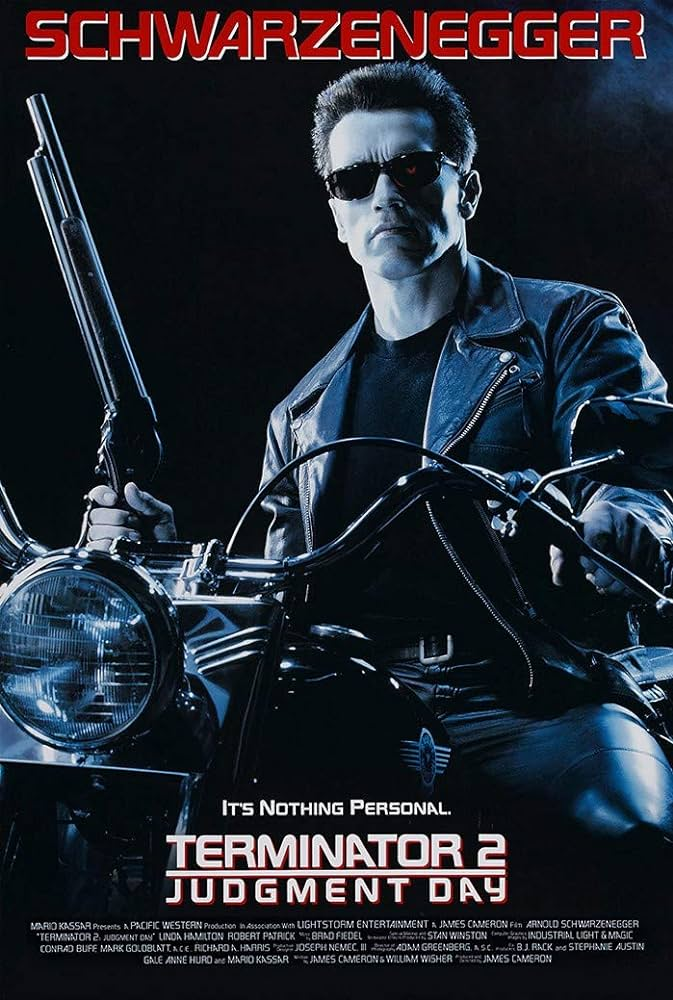
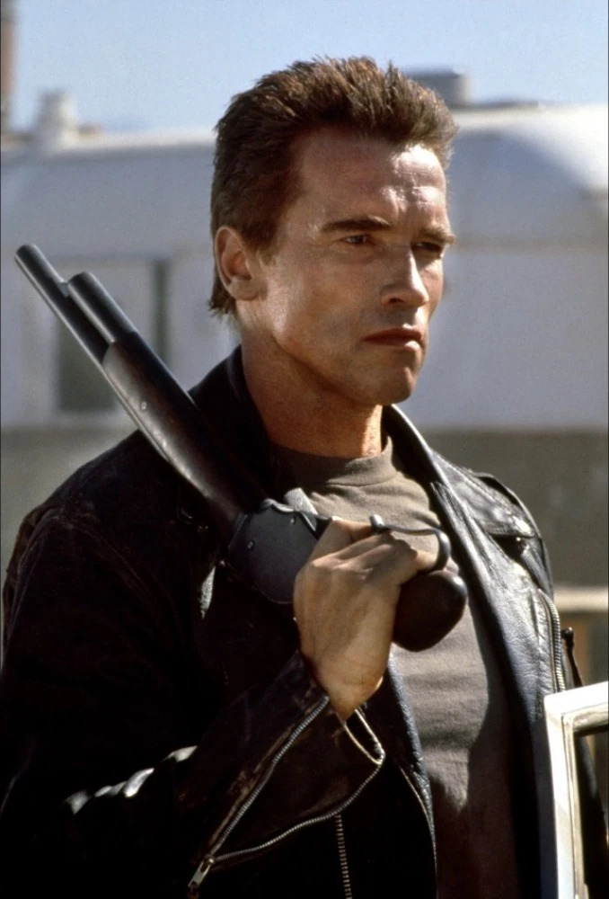
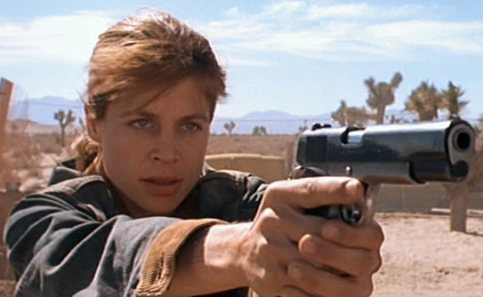
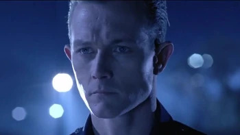

Yo, in "Terminator 2," set 11 years after the first flick, John Connor, the dude who's gonna save the future from a robot apocalypse, is being hunted by the shape-shifting T-1000, a rad Terminator from tomorrow.
But check it, there's also a souped-up T-800, played by the one and only Arnold Schwarzenegger, sent back to protect the kid. John and his mom team up with the T-800, and get this – John starts bonding with the robot.It's a wild, action-packed ride with a heart, man!
CharactersThe Terminator Played by: Arnold Schwarzenegger Sarah Connor  Played by: Linda Hamilton T-1000  Played by: Robert Patrick |